🧭行程总览
整体节奏宽松不赶场，每天核心活动1-2个，午后留休息/自由探索时间。亲子重点放在 手工体验（扎染、玻璃、陶艺）和博物馆。 酒店已定：前3晚麗枫酒店（陶瓷博物馆旁） + 后3晚景瀚大酒店（陶溪川街区），地图上已标注紫色点。
📌 待补充：① 每日哪个半天空着，等你刷到好玩的再填 ② 鄱阳湖观鸟若成行，会替换 D6/D7 中的一天。
🗺️可缩放地图 · 标注所有目的地（共40+个点）
酒店（已订）
博物馆/展馆
门店/市集
亲子手工体验
美食
自然/古镇
机场/租车
📅每日行程（宽松版）
D18/15 周五落地 · 取车 · 入住麗枫
17:30 - 19:40
✈️ CA1887 北京→景德镇罗家机场
落地约晚8点，先取行李
19:30
🚗 机场取车（日产轩逸）
取车点：罗家机场服务点，已订8/15 19:30–8/23 10:00
20:30
🍜 晚餐：抚州弄 / 花香酒酿煮粉
第一晚别太赶，就近吃碗粉暖胃
21:30
🏨 入住：麗枫酒店（陶瓷博物馆陶阳里店）
昌江区瓷都大道1168号 · 高级大床房 · D1-D3共3晚
D28/16 周六陶瓷博物馆 + 御窑 + 陶阳里
09:30
🏛️ 景德镇陶瓷博物馆 免费
闺女看青花、颜色釉；周一闭馆，今天周六OK

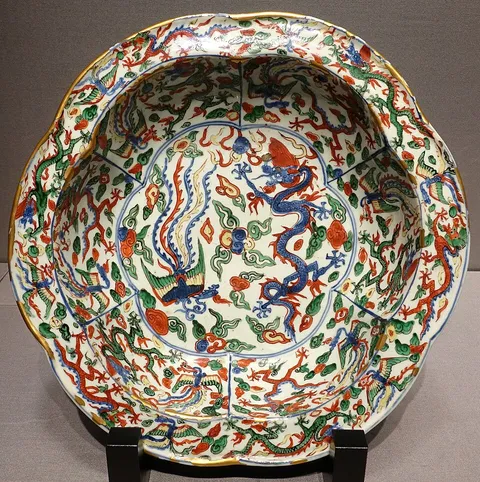
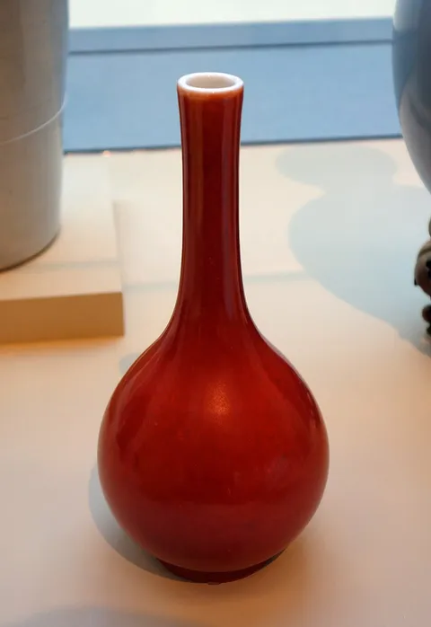
12:00
🍽️ 泥上风土自然餐厅 / 抚州弄午餐
本地菜，可要求微辣
14:00
🏛️ 御窑博物馆 + 陶阳里历史文化旅游区 亲子
建筑很出片，逛老作坊遗址；联票约53元
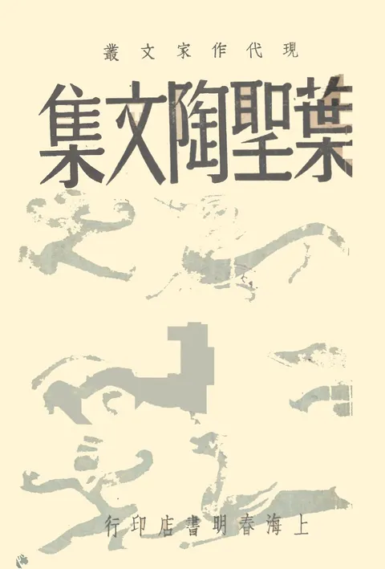
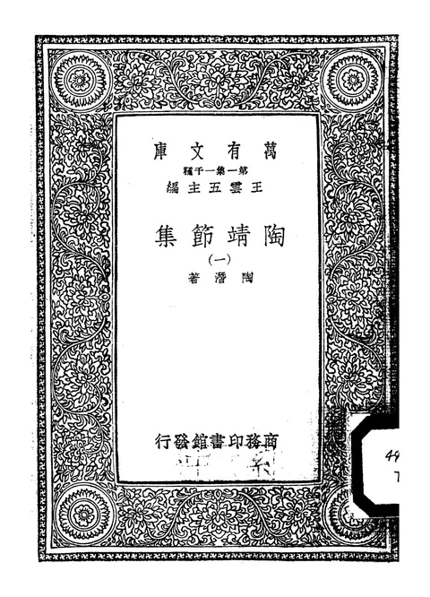
17:00
🛍️ 抚州弄小吃街 + 陶阳新村夜市
吃饭+逛小摊，买便宜手工小物件
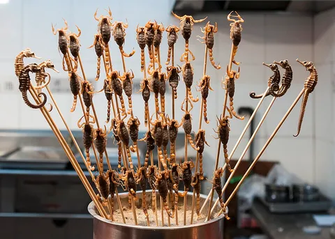
晚
（空）— 看你刷到啥
D38/17 周日亲子手工日 · 扎染 + 玻璃 + 晚写真
09:30
🎨 小樱青花扎染店 扎染DIY亲子
约105元/人，闺女最爱！提前约，确认总价含材料
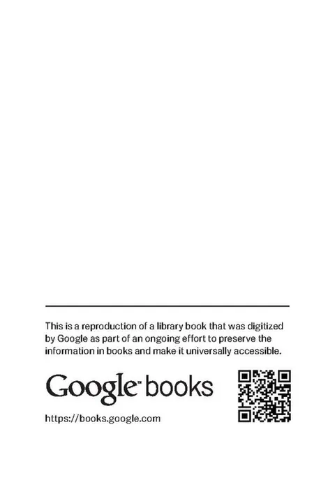

14:00
🔮 绿西玻璃工作室 玻璃熔合亲子
做玻璃小件，单次体验即可，成品可带走
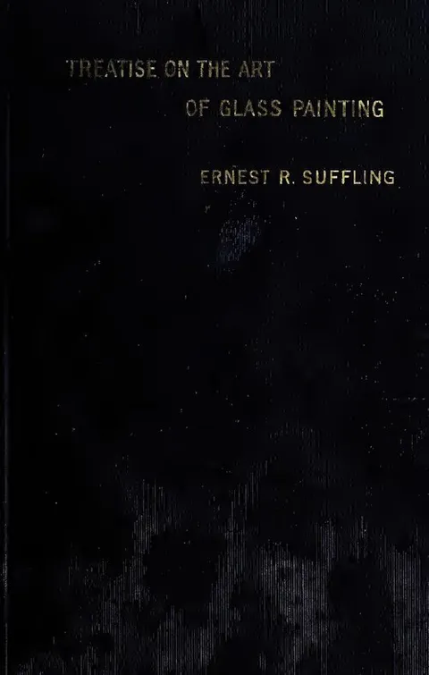

19:00
📸 胖师傅写真馆·妆造（古风写真） 写真亲子
御窑厂附近，闺女穿青花服拍组写真，留念绝佳。提前预约，预留1-2小时
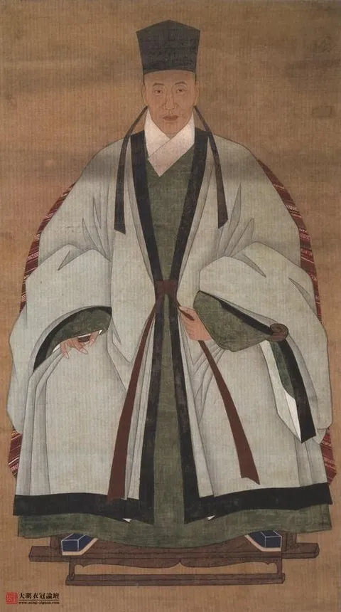
D48/18 周一三宝村艺术慢逛 → 换酒店
10:00
🏞️ 三宝国际陶艺村（陶源谷·三宝度假区）免费
艺术工作室+小溪+奇怪可爱的小店，周一很多馆闭但村子开放

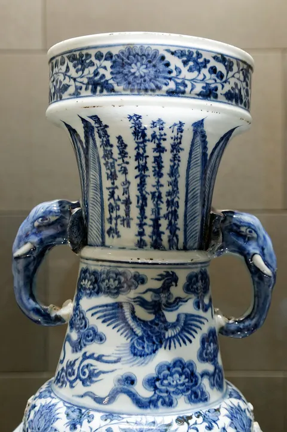
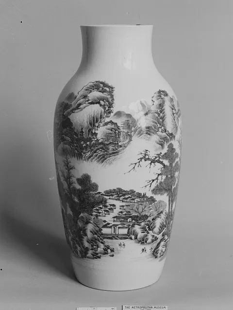
12:30
🍽️ 三宝村内简餐
15:00
☕ 三宝村咖啡/手作小店自由探索
累了就回麗枫拿行李
17:00
🏨 办理退房（麗枫）→ 入住景瀚大酒店（陶溪川街区店）
珠山区广场南路28号 · 云端观景大床房 · D4-D6共3晚
D58/19 周二雕塑瓷厂 + 陶溪川文创街区
09:30
🏭 雕塑瓷厂 免费
巷子里有原创陶瓷，适合淘小物件给闺女；拍照好看


12:00
🍽️ 一番街烤肉（午餐）
14:00
🏛️ 陶溪川文创街区 + 今夕美术馆 免费
美术馆+画廊+文创市集，周五六晚有夜市
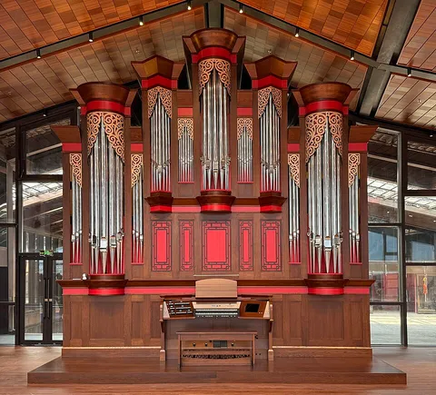
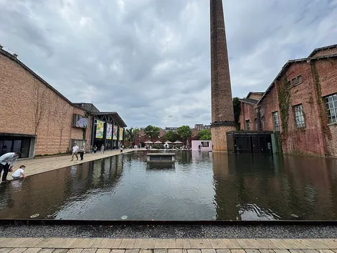

晚
（空）— 若周五六再回来赶夜市
D68/20 周三古窑 / 瓷宫 / 直升机 或 鄱阳湖
方案A
🏺 古窑民俗博览区（95元）+ 浮梁新平村瓷宫（25元）亲子
看传统柴窑+老师傅拉坯，闺女能看懂"瓷器怎么烧出来"
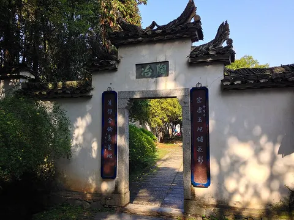
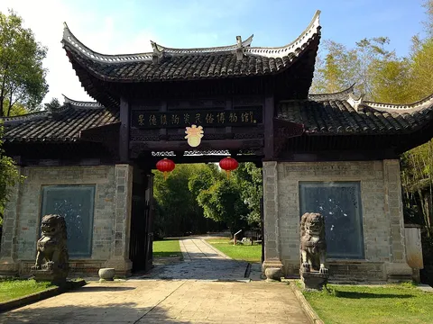


方案A+
🚁 江西直升机科技馆 亲子
闺女如果喜欢机械/飞行器会很兴奋，离市区不远


方案B
🦅 鄱阳湖国家湿地公园（自驾约1.5h）
8月非越冬高峰，夏候鸟+湿地也值得；成行就占一天
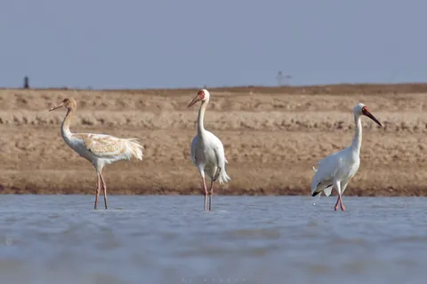


晚
（空）
D78/21 周四瑶里古镇一日游
09:00
🏘️ 瑶里古镇风景区 + 东埠古街古码头 免费
徽派老屋+小桥流水+古码头，闺女可写生/捡石头
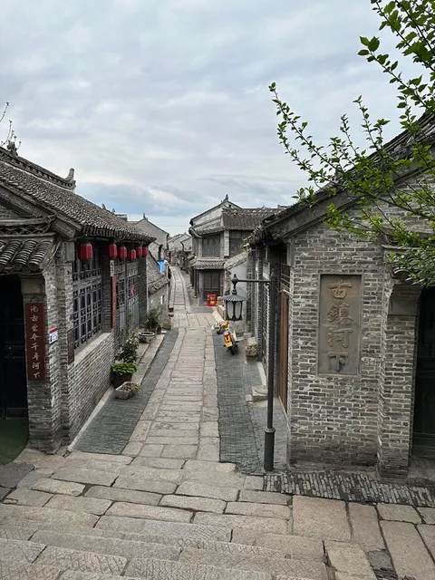

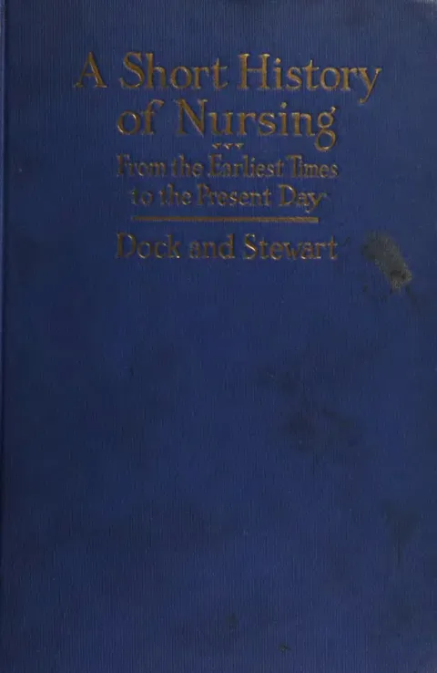
12:30
🍽️ 瑶里镇内午餐
14:30
🌿 寒溪村（免费，茶园村）/ 山闾村戏台
艺术茶园+古戏台，返程顺路
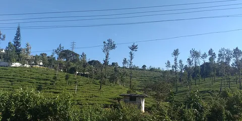
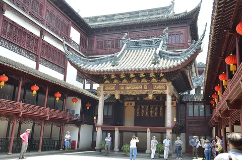
晚
（空）
D88/22 周五补逛 + 返程准备
上午
🛍️ 补买手信 / 丙丁柴窑 / 七四O厂 / 东郊学堂
挑1-2个感兴趣的补打卡，不用全去
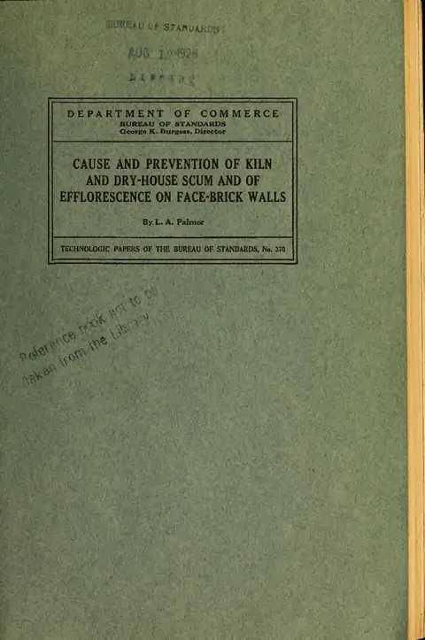
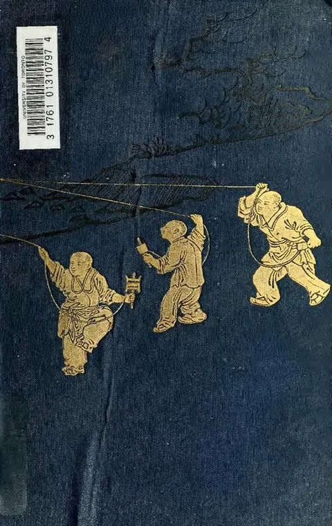
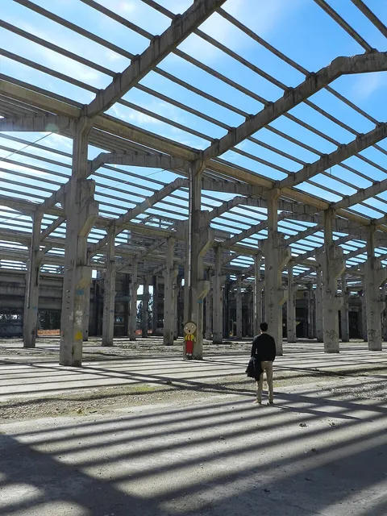
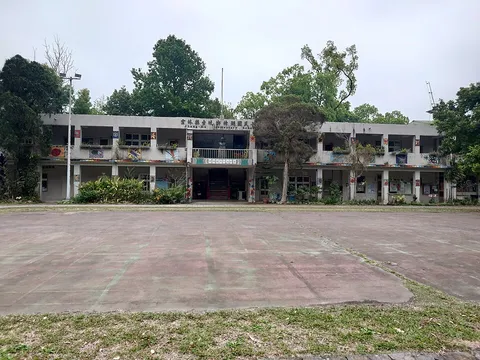
下午
🧳 整理行李 + 闺女手工作品打包
易碎！带气泡膜/衣服裹好
晚
（空）— 最后一晚自由安排
D9?8/23 周日返程
10:00 前
🚗 还车（罗家机场服务点）
租期到 8/23 10:00，别超时
10:35
✈️ CA8662 景德镇→北京
落地北京 12:45
🏨已订酒店
🏨 麗枫酒店（陶瓷博物馆陶阳里店） 已订
📍 昌江区瓷都大道1168号 | 高级大床房 | 3晚
- 📅 8/15 入住 — 8/18 离店（D1-D3）
- ✅ 紧邻陶瓷博物馆，步行可达
- ✅ 离陶阳里/御窑也很近
- ⚠️ D4早上退房后换到景瀚
🏨 景瀚大酒店（陶溪川街区店） 已订
📍 珠山区广场南路28号 | 云端观景大床房 | 3晚
- 📅 8/20 入住 — 8/23 离店（D4-D6）
- ✅ 陶溪川文创街区就在旁边
- ✅ 后半程逛街/夜市/返程都方便
- ⚠️ 注意：截图显示8/20入住，实际D4是8/18换酒店？请确认日期
⚠️ 日期确认：截图显示麗枫 8/15-8/18（3晚）、景瀚 8/20-8/23（3晚），中间 8/18晚-8/20中午有空档？还是景瀚实际是 8/18入住？请确认一下，我好调整日程。
🎨闺女手工控 · 必体验清单
小樱青花扎染店
约 ¥105/人
扎染DIY，青花风格，10岁完全能上手，成品围巾/布包可带走。强烈推荐，记得提前预约并确认总价含材料。
绿西玻璃工作室
单次体验价面议
玻璃熔合（fusing）做小镜子/挂件，火候艺术，闺女会觉得神奇。单次即可，不必报三天课。
陶艺拉坯
约 ¥80-150/人
雕塑瓷厂/三宝村很多工作室可体验，做只小碗最有纪念意义。可和扎染排不同天。
胖师傅写真馆·妆造
古风妆造拍摄
御窑厂附近，闺女穿青花服饰拍组写真，留念绝佳。想拍可排D3晚或D4。
🆕新增地点一览（已标入地图）
| 地点名称 | 类型 | 备注 |
|---|---|---|
| 江西直升机科技馆 | 亲子 | 闺女爱机械的话必去 |
| 浮梁县新平村瓷宫 | 景点 | 门票25元，外形出片 |
| 瑶里景区东埠古街古码头 | 古镇 | 瑶里配套，古码头很有味道 |
| 瑶里古镇风景区 | 古镇 | 徽派老屋+小桥流水 |
| 前程漂流 | 玩水 | 夏季玩水好去处，带替换衣物 |
| 丙丁柴窑 | 工艺 | 现代柴窑建筑，摄影圣地 |
| 景德镇市七四O厂 | 工业遗存 | 老厂房改造，文艺感 |
| 东郊学堂 | 文化空间 | 老学校改造的艺术空间 |
| 陶溪川文创街区 | 文创 | 美术馆+画廊+周五六夜市 |
| 景德镇民窑博物馆 | 博物馆 | 了解民窑历史 |
| 陶源谷·三宝国际陶艺村 | 艺术村 | 三宝村正式名，艺术工作室聚集 |
| 景德镇御窑博物馆 | 博物馆 | 陶阳里内，建筑极美 |
| 抚州弄 | 美食街 | 本地小吃一条街 |
| 陶阳里历史文化旅游区 | 景区 | 含御窑+老街，大片区 |
| 古窑民俗博览区 | 景区 | 门票95元，柴窑+拉坯演示 |
| 今夕美术馆 | 美术馆 | 陶溪川内，当代艺术展 |
| 山闾村戏台 | 古建 | 古戏台，瑶里方向顺路 |
| 饶州古镇 | 古镇 | 鄱阳县方向，鄱阳湖附近 |
| 鄱阳湖国家湿地公园 | 自然 | 观鸟/湿地，D6备选 |
📸景点相册（附图版）
🖼️ 以下照片来自 Wikimedia 共享资源（免费授权），由你的手机/电脑联网加载。部分为同类题材示意图（非该地点实景，如古镇/老街用了其他地区的相似画面、个别为文献封面），仅供闺女先有个印象；想换成实景图随时告诉我地点名。
🏛 博物馆/展馆
景德镇陶瓷博物馆
看青花、颜色釉与历代瓷器，闺女瓷器启蒙最好的地方
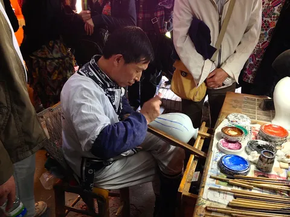
景德镇民窑博物馆
了解民窑烧造历史，规模小、顺路可看
今夕美术馆
陶溪川内的当代艺术展，免费参观
江西直升机科技馆
直升机展示+科普，爱机械的闺女必去
🛍 门店/市集/景区
陶溪川文创街区
美术馆+画廊+文创市集，周五六晚有夜市
雕塑瓷厂
巷子原创陶瓷，淘小物件给闺女、拍照好看
陶阳新村夜市
夜宵小摊，便宜手工小物件
浮梁县新平村瓷宫
童话城堡般的瓷制宫殿，门票25元
景德镇古窑民俗博览区
传统柴窑+非遗拉坯演示，门票95元
景德镇陶阳里历史文化旅游区
含御窑与明清老街的大片区
景德镇市七四O厂
老电子厂改造，文艺复古风、适合拍照
东郊学堂
老学校改造的文化/艺术空间，可顺路停留
丙丁柴窑
清水混凝土现代柴窑，摄影圣地
山闾村戏台
古戏台建筑，瑶里方向顺路
🎨 亲子手工
小樱青花扎染店
扎染DIY约105元/人，闺女最爱
绿西玻璃工作室
玻璃熔合做小挂件，火候艺术很神奇
胖师傅写真馆·妆造
古风妆造拍摄，闺女穿青花服超好看
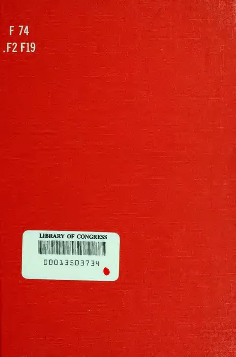
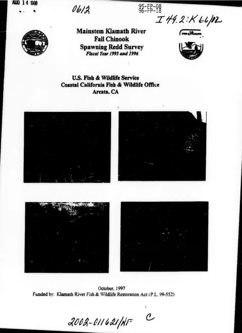
前程漂流
夏季玩水好去处，带替换衣物+防水袋
🌿 自然/古镇
陶源谷·三宝国际陶艺村
艺术工作室聚集地，免费慢逛拍照
瑶里古镇风景区
徽派老屋+小桥流水，闺女可写生捡石头
瑶里景区东埠古街古码头
古茶叶运输码头，古街保存完好
寒溪村
艺术茶园村，凉快安静、返程顺路
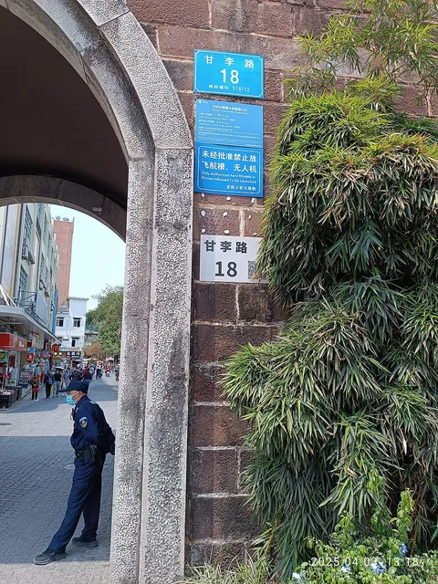
饶州古镇
鄱阳湖方向的仿古商业街
鄱阳湖国家湿地公园
湿地生态+夏候鸟，D6备选方案
⚠️注意事项 & 本地经验
🔴 闭馆日：陶瓷博物馆、御窑博物馆周一闭馆！行程已避开周一安排馆内活动，别临时调换。
🌶️ 吃辣：景德镇菜偏辣，带娃点单一定说"微辣/不辣"，肠胃弱的备药。
☀️ 防暑：8月 24-33℃，瓷宫/古窑户外暴晒，带遮阳帽、防晒、小风扇、水。
🦟 防蚊：瑶里、寒溪、三宝村蚊虫多，长袖+驱蚊液必备。
🛵 电瓶车：满街电瓶车，过马路牵好闺女，租车自驾也小心。
🏺 买瓷：景区店先问价再摸，雕塑瓷厂巷子里的原创更划算；易碎品现场包气泡膜。
📱 充电：拍照多，充电宝天天满电；导航用高德/百度离线地图备着。
🚗 租车：已含ETC，还车8/23 10:00前，别超时；儿童安全座椅自行确认是否需租。
🏨 换酒店：D4从麗枫换到景瀚，记得提前打包行李，退房时检查手工作品是否带齐。
🎒行前清单（可勾选）
🪪 证件
👕 衣物
☀️ 防护
💊 药品
📱 电子
🎨 手工相关
🔄 后续怎么更新这份攻略：你刷到想去的店/展，直接把名字发我，我加进地图和对应那天的空位；鄱阳湖若去，告诉我具体哪天，我把D6/D7替换好。